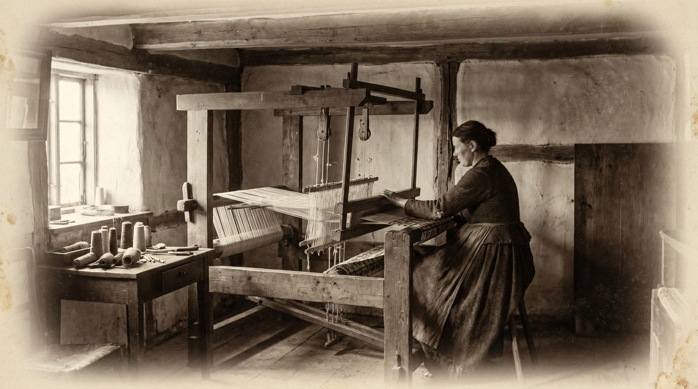

Kapitel I
Die Anfänge
Russikon war über lange Zeit von der textilen Heimindustrie geprägt. In diesem Umfeld gründeten der einheimische Gemeindeschreiber Jean Weber und Adolf Bosshard eine Weberei, die zunächst im Verlagssystem betrieben wurde: Garn wurde an Heimweberinnen und Heimweber in der Region verteilt, die daraus in Handarbeit Stoffe fertigten.
Das Gründungsjahr ist in den Quellen nicht einheitlich überliefert. Das Historische Lexikon der Schweiz nennt 1887, firmeneigene und mediale Angaben sprechen von 1890. Gesichert ist, dass hier der Grundstein für den späteren Industriebetrieb gelegt wurde.
